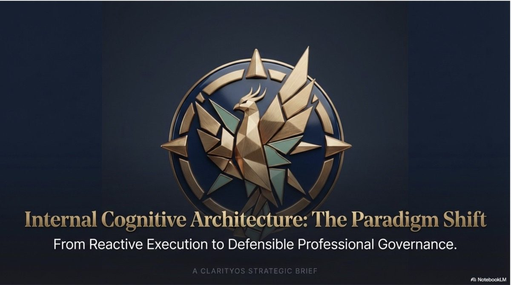
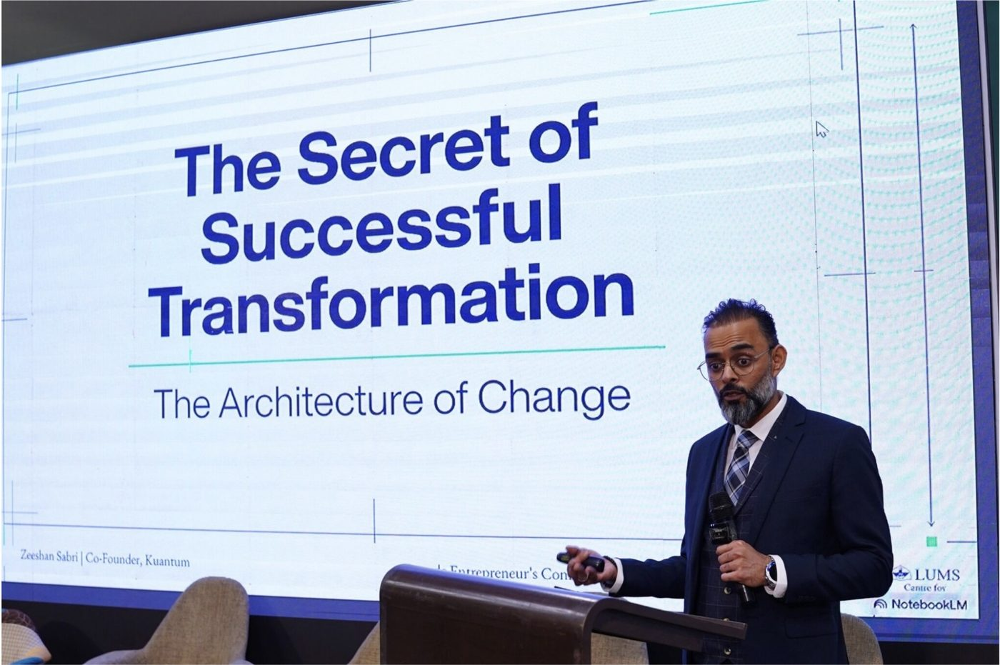

Focused intervention
ClarityOS Personal Session
A focused session for one defined decision, transition, or leadership constraint.
Request session accessClarityOS · Pre-Governance Operating System
The Human OS before the System OS.
Zeeshan Sabri is the Crisis-to-Clarity Architect and founder of ClarityOS—a proprietary methodology for diagnosing and strengthening the human conditions beneath governance, technology, and transformation.
Read the premise01 · The premise
ClarityOS is the prerequisite, not the upgrade.
When decision authority is unclear, readiness trails ambition, and governance arrives before capacity, transformation becomes an installation exercise instead of an institutional capability.
02 · The operating methodology
8C Crisis-to-Clarity Framework
ClarityOS organizes the human layer into an eight-part diagnostic and operating sequence. The components stay connected: no isolated technique can carry the system alone.
Name the real problem before the system names it for you.
Read the human, cultural, and operating conditions underneath change.
Make decision rights and accountability visible.
Build the capacity required to carry the intended transformation.
Test the system against evidence, context, and consequence.
Intervene before drift becomes institutional failure.
Protect what must endure through disruption and transition.
Turn the operating logic into repeatable leadership behavior.

Proprietary positioning
“You cannot install a First World governance system on a broken human operating system.”
The claim is presented as Zeeshan Sabri’s point of view—not as a universal statistical assertion.
03 · The narrative anchor
From Exile to Transformation
The book connects lived resilience, Fortune 500 foundations, GCC institution-building, and the creation of ClarityOS. Its six parts become the platform’s editorial and search architecture.
04 · The framework library
Intellectual property made useful
Each framework will own a distinct search intent, practical tool, related chapter, and next-step path. These four are the homepage entry points.
Sequence transformation through Foundation, Structure, Alignment, Optimization, and Transformation.
Transformation architecture02Map authority, trust, influence, context, and informal decision paths before attempting to lead across a system.
Cross-cultural leadership13Connect AI ambition to human readiness, decision logic, accountability, and the governance conditions needed to sustain it.
AI & governance04Use real limits as design intelligence instead of treating every constraint only as a barrier.
Innovation & execution05 · From method to engagement
ClarityOS Engagement Roadmap
This engagement sequence is intentionally distinct from the five-level Pyramid Framework. It describes how the work progresses—not how transformation maturity is structured.
Establish the human conditions the system will depend on.
Translate clarity into roles, routines, and decision discipline.
Sequence change without outrunning organizational capacity.
Embed the new operating logic so it can hold under pressure.
06 · The architect
Lived experience before language
Kuwait exile shaped the first questions. Fortune 500 environments supplied operating discipline. GCC institution-building exposed the gap between installed systems and the human conditions required to hold them.
07 · Ways to engage
Choose by consequence, not package size
Three clear entry points keep the commercial path legible without flattening every need into the same offer.
Focused intervention
A focused session for one defined decision, transition, or leadership constraint.
Request session accessInstitutional transformation
A structured engagement to diagnose, sequence, and strengthen the human layer beneath transformation.
Discuss enterprise fitStrategic access
Board counsel, executive advisory, keynote, and facilitated leadership formats for consequential moments.
Start a qualified inquiryBooking and payment activate when the verified service URL is supplied. Until then, session requests route to direct email.

08 · In the field
Speaking, counsel, facilitation
The media system will use verified talks, workshops, public appearances, and approved evidence—never decorative authority signals.
Explore verified media09 · Current thinking
The Clarity Dispatch
Editorial work connects a live question to one framework, one useful tool, and one proportionate way to engage.
Enter The Clarity DispatchBoardroom reference
The recovered 12-page profile is available as a direct source document while its rights, claims, and production use are reviewed for the new media system.
Download profile10 · Begin with clarity